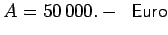
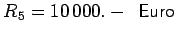
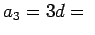
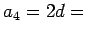
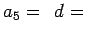

|
Der Anschaffungspreis einer Maschine sei . Diese Maschine soll in 5 Jahren digital auf den Restwert  abgeschrieben werden.
Der mit den angegebenen Formeln berechnete und in der Tabelle angegebene Abschreibungsplan zeigt einen ausgeglichenen Verlauf der prozentualen Abschreibung.
| Jahr |
Anfangswert |
Abschreibung |
Restwert |
Abschreibung in 
 vom Anfangswert vom Anfangswert |
| 1 |
50 000 |
a1=5d= 13 335 |
36 665 |
26,7 |
| 2 |
36 665 |
a2=4d= 10 668 |
25 997 |
29,1 |
| 3 |
25 997 |
 8 001 |
17 996 |
30,8 |
| 4 |
17 996 |
 5 334 |
12 662 |
29,6 |
| 5 |
12 662 |
 2 667 |
9 995 |
21,1 |
|